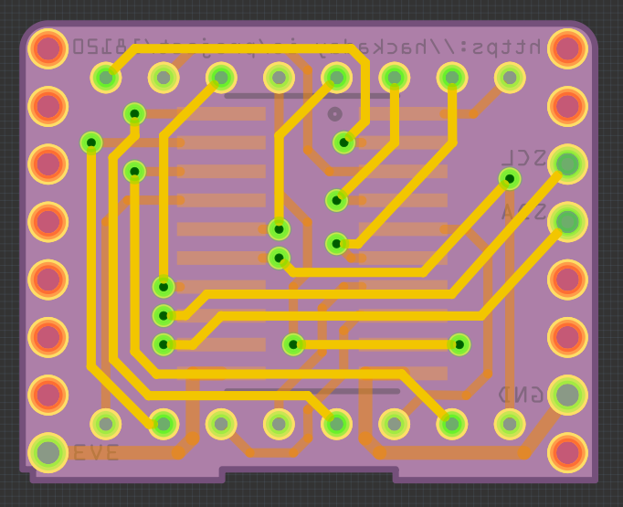

Boards #2¶
Published on 2016-12-01 in D1 Mini Matrix Shield.
n other news, now that I actually know the pin spacing of those matrices, I re-did the PCB design, taking that into account, and also moving the chip on the underside, so that the whole thing is not as thick.
It’s no longer a 1” square, since the different positioning of the chip, generous sprinkling of vias and extra space at the edges left me enough room for all the traces.